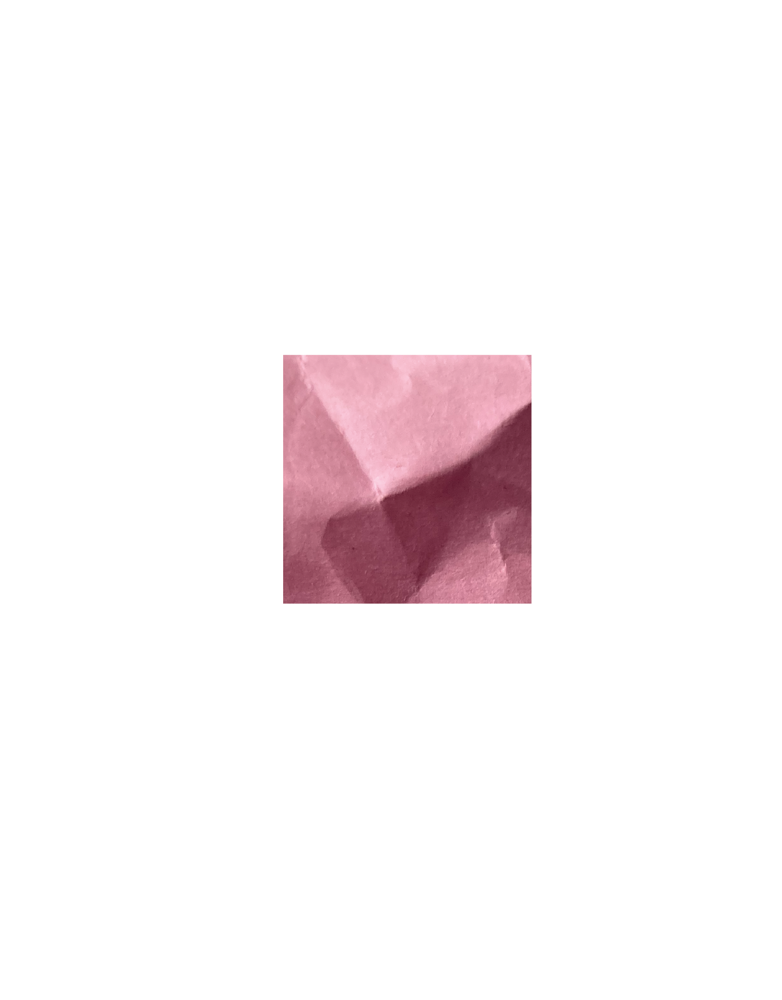
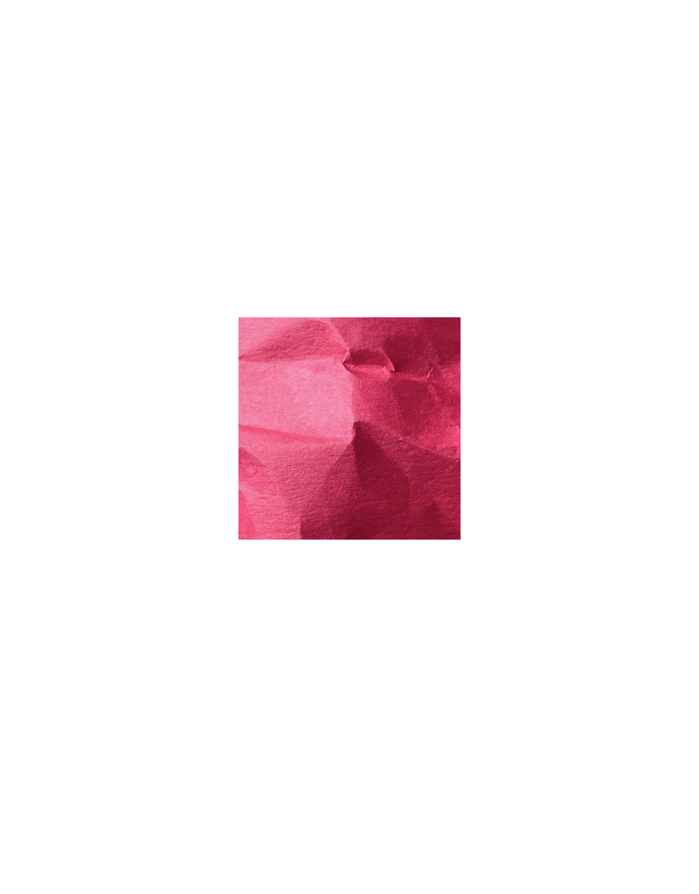
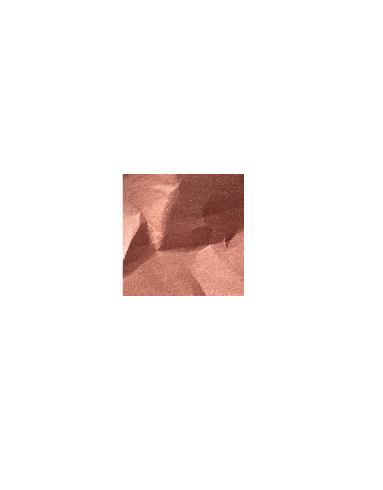
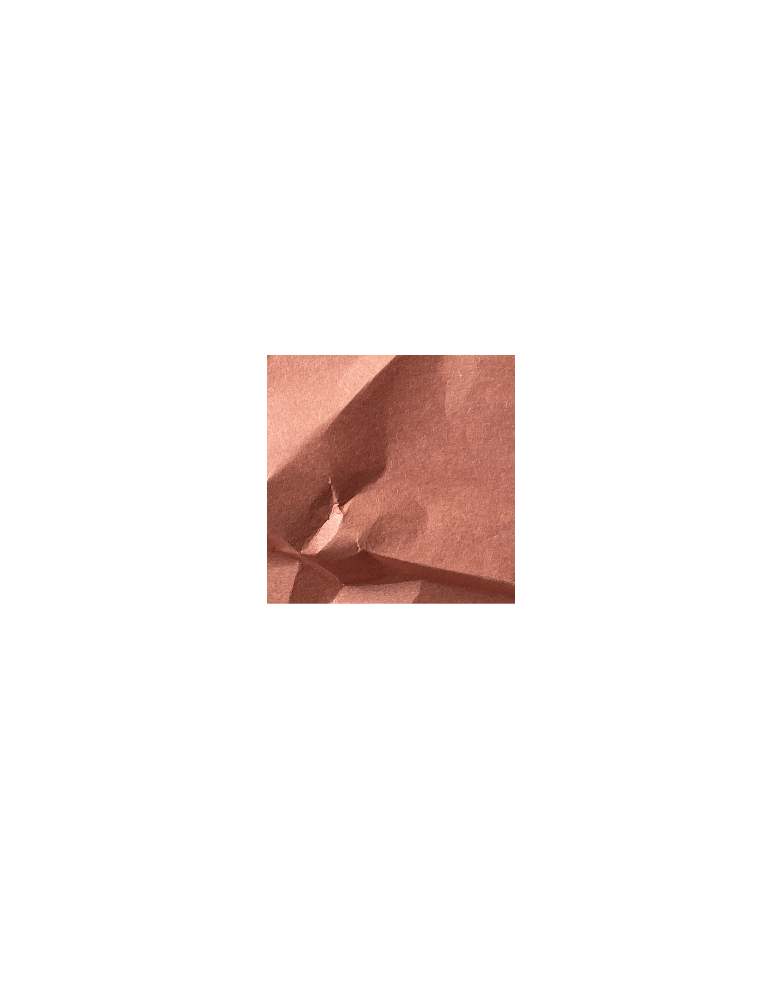
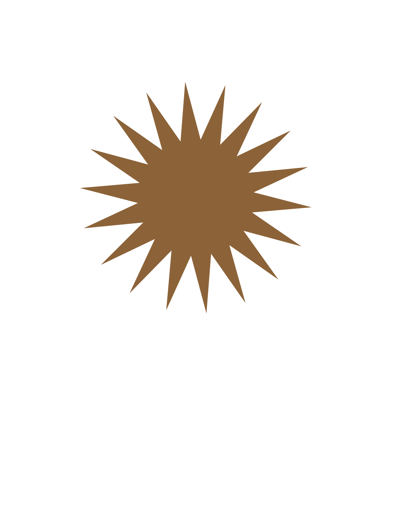

BU CFA AR 226 Sophomore Studio keywords
About
Craft
Designed by Sophie Jurion, Sophomore Graphic Design Studio 2022.




move construction paper to create collage
combining analog with digital

movable type
C
R
A
F
T